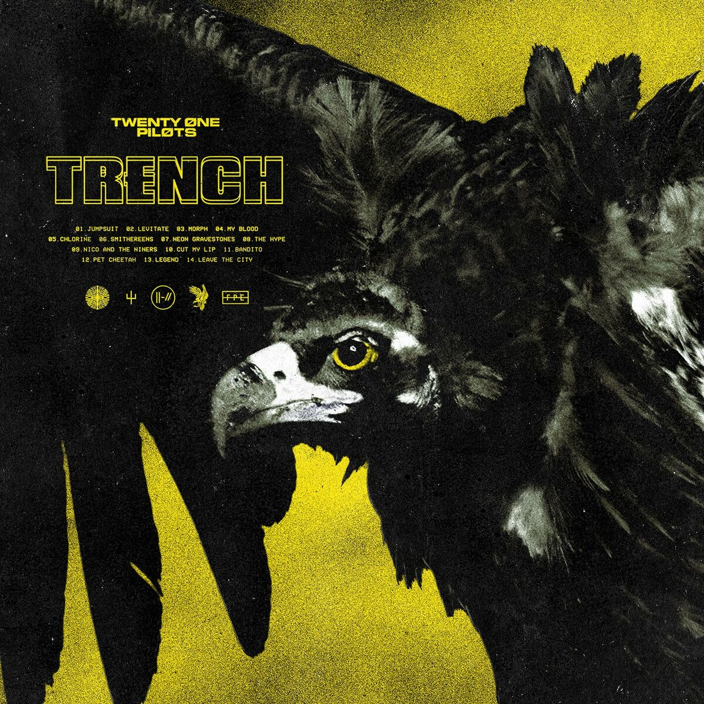

Universo Dema / Trench
Dema: ciudad amurallada con 9 obispos y necrópolis de lápidas de neón.
Trench: exterior y base de los Banditos.
Clancy: rebelde que usa psicokinesis gracias a cuernos de Ned.
Conceptos clave
- Vialismo: religión de Dema (Gloriosamente Desaparecidos).
- Psicokinesis: posesión de cuerpos, base del control de obispos.
- ||-// símbolo Bandito (lápida invertida).
- Cover del Album
- 